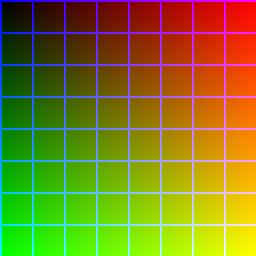
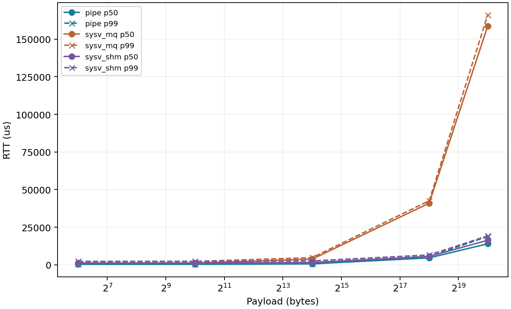
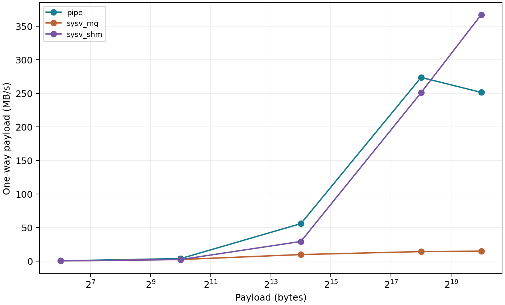
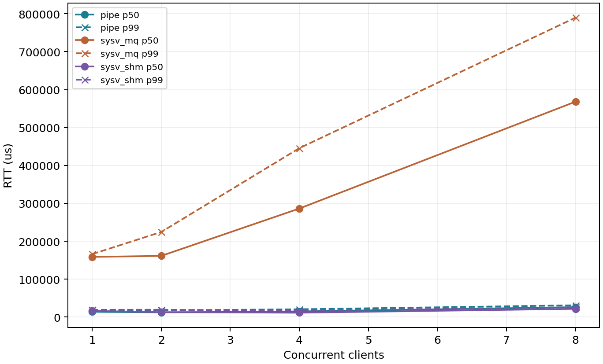
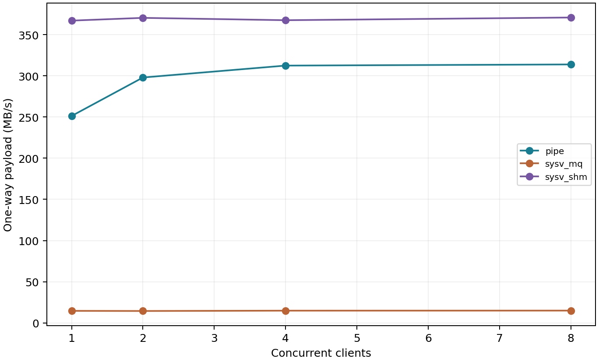
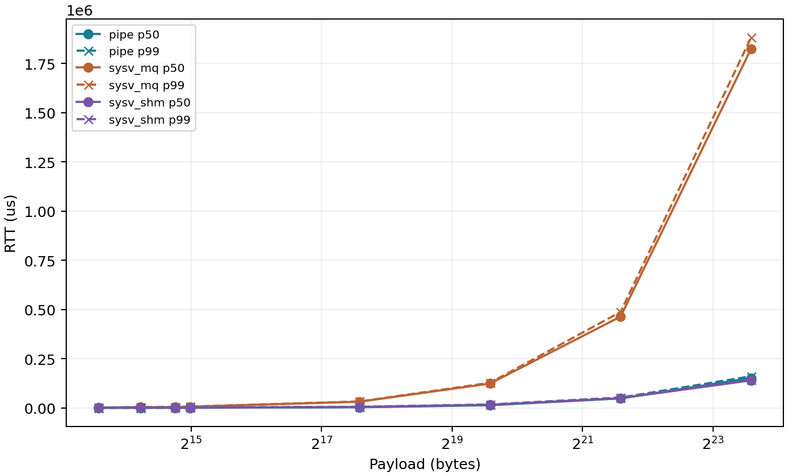
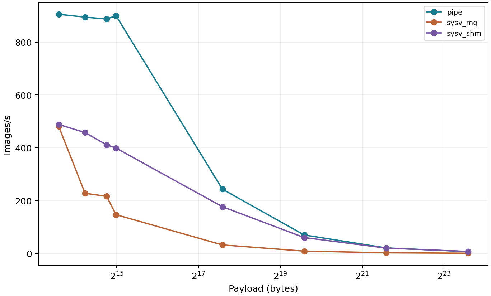
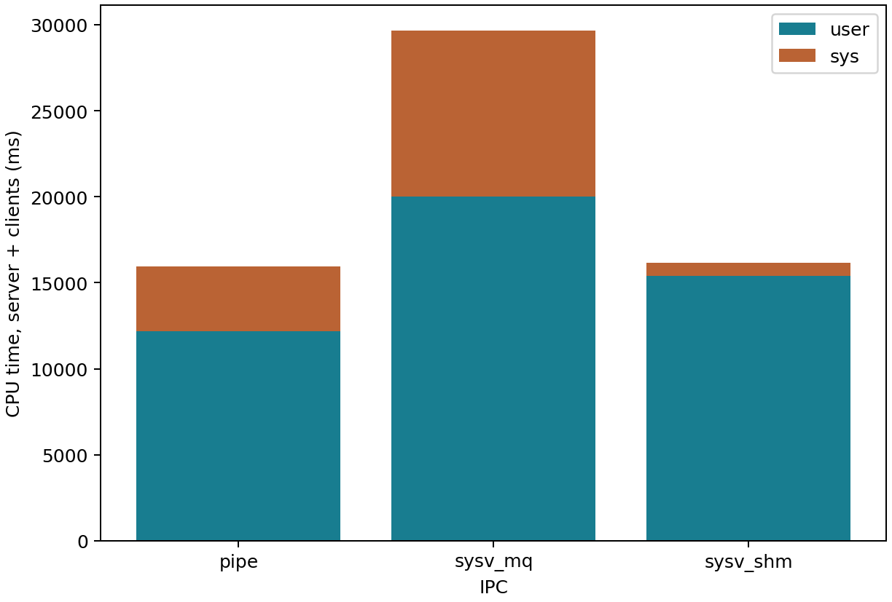
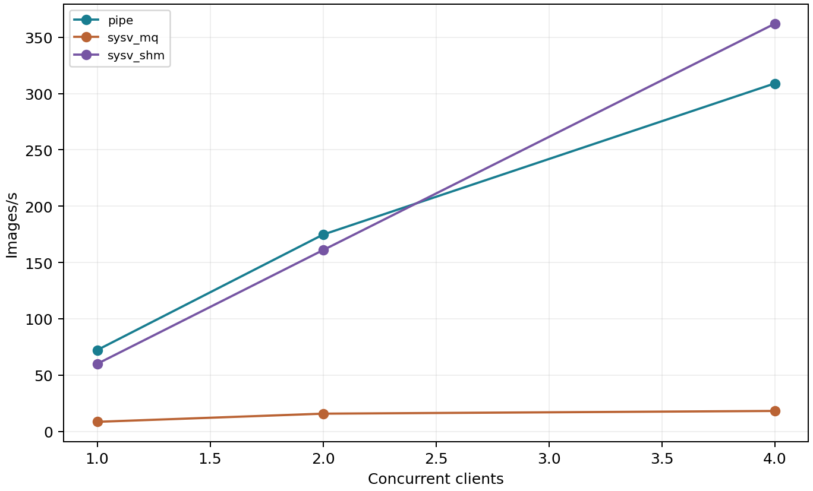
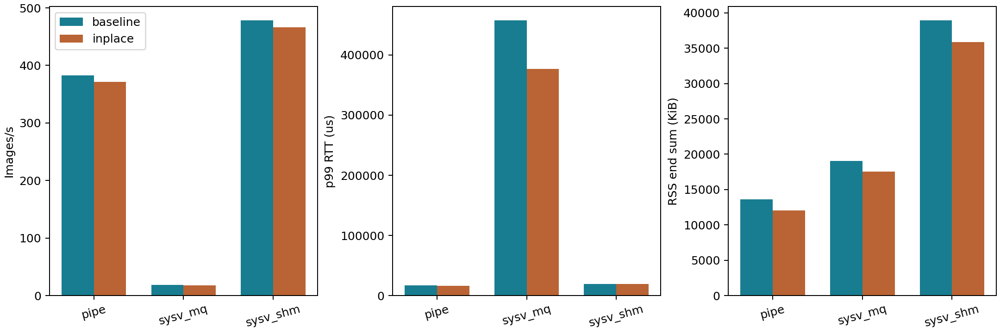

작성 안내: 본 문서는 최종보고서 서식의 목차와 항목 순서를 그대로 따라 작성한 제출용 보고서 본문이다. 1단계 기초(360회)·2단계 응용(156회)·설계 개선(18회) 수치는 2026-11-19~20 Ubuntu Linux 서버의 클린 빌드(build.log·binaries.sha256보존) 정식 재측정 원자료에서, 별도 S5 큐 확대 비교(3쌍)와 데모·strace·R3 진단은 2026-11-13 검증 원자료에서 직접 인용했다.[기입 필요]로 표시된 팀원 정보·제출 날짜·AI 대화 부록만 채운 뒤 PDF로 변환해 제출한다.
--team=1, SysV key 60010~60013, POSIX 이름 /osproject_1_shm)| 학번 | 성명 | 역할 | 담당 IPC 버전 |
|---|---|---|---|
| [기입 필요] | [기입 필요] | 팀장 | [기입 필요: pipe / sysv_mq / sysv_shm] |
| [기입 필요] | [기입 필요] | 팀원 | [기입 필요: pipe / sysv_mq / sysv_shm] |
| [기입 필요] | [기입 필요] | 팀원 | [기입 필요: pipe / sysv_mq / sysv_shm] |
IPC Filter Farm은 여러 클라이언트가 동시에 요청하는 RGB(PPM P6, 3채널) 이미지에 서버가 GRAY(흑백), BLUR(3×3 평균), EDGE(Sobel 경계 검출) 필터를 적용해 반환하는 로컬 클라이언트-서버 병렬 처리 응용이다. 단순 메시지 중계가 아니라, 서버 내부의 다중 워커 스레드가 공유 작업 큐(jobs/done)를 통해 픽셀 연산을 수행하고 결과를 요청 클라이언트에게 정확히 라우팅한다.
이 응용에서 IPC 선택이 성능에 중요한 이유는 다음과 같다.
12KiB에서 12MiB까지 약 1,024배 증가한다. 작은 이미지에서는 시스템 콜·동기화 대기 같은 고정 비용이, 큰 이미지에서는 커널-사용자 공간 복사·청크 분할·메모리 대역폭 비용이 지배적으로 작용한다.N=1..4)와 파이프라인 깊이(W=1..16)가 늘어나면 통신 채널의 버퍼 용량과 동기화 방식이 처리량과 꼬리 지연(p99 RTT)을 크게 바꾼다.GRAY에서는 IPC 비용이 병목으로 드러나고, 무거운 BLUR/EDGE에서는 필터 연산이 통신 차이를 희석한다.따라서 본 과제의 목표는 **익명 pipe, System V Message Queue(sysv_mq), System V Shared Memory + Semaphore(sysv_shm)** 3종(선택 확장으로 fifo, posix_shm 추가 구현)에 대해 1단계 기초 성능을 측정하고, 이를 바탕으로 2단계 응용 성능을 구현 전 예측·실측 비교·단일 요인 원인 실험·설계 개선까지 수행해 근거 있는 IPC 선택 기준을 도출하는 것이다.
server, basic_server):** 지정한 IPC 채널로 다수 클라이언트의 요청을 수신해 헤더·페이로드 길이·FNV-1a 32bit 체크섬을 검증한다. 정상 요청은 유계 작업 큐(jobs)를 통해 다중 워커에 분배해 필터(1단계 기초 벤치는 echo)를 수행하고, 완료 큐(done)를 거쳐 요청 client_id로 응답한다. 모든 클라이언트의 MSG_BYE 수신 또는 SIGINT 시 유한 시간 안에 종료하고 IPC 자원을 해제한다.client, basic_client):** 합성 PPM P6 이미지를 생성해 메모리에 적재한 뒤, 최대 W개의 미완료 요청(inflight)을 파이프라인으로 송신한다. 응답의 client_id, seq, t_send_ns, 체크섬을 전건 검증하고 RTT·자원 사용량을 CSV로 기록한다. 데모 모드에서는 입력·결과 PPM 이미지 1쌍을 저장하고, 벤치마크 모드에서는 --no-save로 파일 I/O를 제외한다.pipe_run):** 익명 파이프는 부모의 FD 상속이 필요하므로, 클라이언트 수만큼 요청·응답 파이프를 생성해 서버와 클라이언트를 fork/exec하고 로그·CSV·종료 회수를 관리한다.clean_ipc, basic_clean_ipc):** 비정상 종료 시 잠금 소실과 소유 기록(생성 식별자·UID·inode)을 확인한 뒤 본인 자원만 안전하게 회수한다.512², depth=4/16) 비순차 seq 처리에서 유실·중복·체크섬 오류·클라이언트 간 혼입 0건을 달성한다.images/s)이며, 보조 지표는 지연시간(mean, p50, p95, p99, max RTT)과 자원 사용량(ru_utime, ru_stime, nvcsw, nivcsw, 시작/종료 VmRSS)이다.R1: 전 백엔드 동일 48B msg_hdr_t 사용(1단계는 지정 바이트 전송 + 제어 비용 별도 명시).R2: 모든 수신 경로에서 FNV-1a 32bit 체크섬 계산·대조.R3: 측정 중 이미지·결과·CSV 파일 I/O 및 진행 출력을 제외하며, 제어 메타데이터 접근과 런타임 /proc 조회는 구현 비용에 포함해 추적으로 공개(2026-11-13 측정 후 정정, 소급하지 않음).R4: --no-save 지원 및 벤치마크 필수 적용.R5: 시간 측정은 CLOCK_MONOTONIC 사용(CLOCK_REALTIME은 sem_timedwait deadline 전용).R6: 평균·p50·p95·p99·max 동시 보고.R7: 응용 코드 내 백엔드별 분기 금지(백엔드 테이블은 src/ipc/ipc.c에만 한정).main, receiver, worker 2개, responder), 클라이언트 4개(main, sender, receiver, stats)로 양측 모두 최소 3스레드 조건을 충족한다.libc, pthread, rt)와 Makefile을 사용하며, make 전체 빌드와 make phase1-<ipc> / make phase2-<ipc> 개별 빌드를 경고 0(-Wall -Wextra -Werror)으로 통과한다.60010~60013(60000 + 10×team + 용도), POSIX 이름 /osproject_1_shm을 사용하며, 종료 시 생성한 모든 IPC 자원을 해제하고 ipcs -q -m -s로 잔존 0건을 확인한다.정식 재측정(2026-11-19~20: 1단계 기초·2단계 응용·설계 개선)과 별도 S5 확대·데모 진단(2026-11-13)은 모두 동일한 팀 공통 Linux 서버(computer.tukorea.ac.kr:22000)에서 수행했다.
| 항목 | 내용 |
|---|---|
| CPU 모델 / 코어 수 | Intel Xeon Bronze 3106 @ 1.70GHz, 2소켓 × 8코어 × 1스레드(총 16코어, NUMA 2노드) |
| 메모리 | 총 62.4GiB (가용 약 53GiB, Swap 2.0GiB) |
| OS 배포판 / 커널 버전 | Ubuntu 24.04.5 LTS / Linux 6.8.0-149-generic (x86_64, 11-13 별도 S5·데모는 6.8.0-147-generic) |
| gcc 버전 | GCC 13.3.0 (-std=c11 -D_POSIX_C_SOURCE=200809L -Wall -Wextra -Werror -O2) |
| 가상화 여부 | 없음 (네이티브 베어메탈, systemd-detect-virt: none) |
| CPU·IPC 시스템 설정 | governor powersave, affinity 0–15(미고정), SysV MQ msgmax=8192 B, msgmnb=16384 B |
| 빌드·소스 대응 증명 | 측정 직전 클린 빌드 로그(build.log), 바이너리 9종 해시(binaries.sha256), source.tar SHA-256(18ecd19b...) 보존 |
-DBASIC_BENCH=1 -DSLOT_COUNT=8로 빌드한 basic_server·basic_client로 필터 연산 없이 바이트를 그대로 echo한다.pipe, sysv_mq, sysv_shm) × 페이로드 5단계(64B, 1KiB, 16KiB, 256KiB, 1MiB) × 클라이언트 수 4단계(1, 2, 4, 8) × 측정 모드 2종(지연 W=1, 처리량 W=4) × 독립 3반복 = 총 360회 실행, 측정 표본 1,350,000건.seq=0..99)를 먼저 마친 뒤 측정 1,000회(seq=100..1099)를 기록한다. 각 지표는 실행 내 전 클라 표본에서 산출한 뒤 3반복의 중앙값을 보고한다.t_send_ns: client의 sender 스레드가 inflight 세마포어를 획득한 뒤 backend->send() 호출 직전에 clock_gettime(CLOCK_MONOTONIC)으로 기록한다.finished: client의 receiver 스레드가 backend->recv()로 응답을 받고 체크섬·seq·t_send_ns 검증을 마친 직후 기록한다.VmRSS → getrusage() 순서로 기록한 뒤 일괄 송신하고, 마지막 측정 응답 송신 직후 getrusage() → 종료 VmRSS를 기록한다. 클라이언트도 워밍업 전건 수신 직후와 마지막 측정 검증 직후 같은 순서로 기록한다. 따라서 VmRSS 파일 읽기는 getrusage() CPU 구간 바깥에 위치한다.B바이트 외 편도 48B 헤더(msg_hdr_t)와 MQ 청크별 20B·mtype 비용이 별도로 발생하며, 단방향 유효 처리량(MB/s, 1MB = 1,000,000B)은 순수 데이터 바이트만 집계한다.W=1, 3회 중앙값, 단위: µs)| 페이로드 | pipe (mean / p50 / p99 / max) | sysv_mq (mean / p50 / p99 / max) | sysv_shm (mean / p50 / p99 / max) |
|---|---|---|---|
| 64B | 282.661 / 303.296 / 380.057 / 394.247 | 1,242.037 / 1,174.332 / 2,166.148 / 2,373.912 | 1,244.533 / 1,164.091 / 2,280.078 / 2,423.868 |
| 1KiB | 314.832 / 322.466 / 408.780 / 428.752 | 1,213.489 / 1,187.107 / 2,242.832 / 2,415.248 | 1,301.995 / 1,248.227 / 2,294.165 / 2,484.215 |
| 16KiB | 581.634 / 583.969 / 703.218 / 928.436 | 3,736.062 / 3,763.540 / 4,765.490 / 4,939.111 | 1,545.049 / 1,553.220 / 2,576.401 / 2,709.686 |
| 256KiB | 4,540.037 / 4,595.648 / 5,366.708 / 6,499.418 | 39,751.489 / 40,951.017 / 42,576.069 / 43,656.496 | 5,560.101 / 5,553.057 / 6,535.529 / 7,530.856 |
| 1MiB | 13,995.594 / 13,970.996 / 18,834.861 / 19,763.128 | 154,384.909 / 158,764.067 / 166,129.170 / 167,092.634 | 16,298.031 / 16,314.567 / 19,227.956 / 24,113.677 |

W=4, 3회 중앙값)| 페이로드 | pipe (MB/s · msg/s) | sysv_mq (MB/s · msg/s) | sysv_shm (MB/s · msg/s) |
|---|---|---|---|
| 64B | 0.229 · 3,576.2 | 0.142 · 2,217.8 | 0.139 · 2,179.2 |
| 1KiB | 3.606 · 3,521.6 | 2.210 · 2,157.8 | 2.140 · 2,090.3 |
| 16KiB | 55.657 · 3,397.0 | 9.578 · 584.6 | 29.110 · 1,776.8 |
| 256KiB | 273.574 · 1,043.6 | 14.009 · 53.4 | 250.839 · 956.9 |
| 1MiB | 251.279 · 239.6 | 14.680 · 14.0 | 367.006 · 350.0 |

| IPC | 모드 | 클라 1 | 클라 2 | 클라 4 | 클라 8 |
|---|---|---|---|---|---|
pipe | 처리량 W=4 (MB/s) | 251.279 | 297.943 | 312.414 | 313.795 |
sysv_mq | 처리량 W=4 (MB/s) | 14.680 | 14.514 | 14.927 | 15.002 |
sysv_shm | 처리량 W=4 (MB/s) | 367.006 | 370.349 | 367.489 | 370.757 |
pipe | 지연 W=1 p50 / p99 (µs) | 13,971 / 18,835 | 12,482 / 17,628 | 14,949 / 20,587 | 26,160 / 31,066 |
sysv_mq | 지연 W=1 p50 / p99 (µs) | 158,764 / 166,129 | 161,378 / 224,440 | 286,329 / 445,497 | 568,223 / 789,880 |
sysv_shm | 지연 W=1 p50 / p99 (µs) | 16,315 / 19,228 | 12,985 / 19,377 | 11,536 / 17,232 | 21,780 / 25,884 |


W=4, 서버+클라 누적 합계 중앙값)| IPC | user CPU (ms) | sys CPU (ms) | 자발적 / 비자발적 전환 | 시작 / 종료 RSS (KiB) |
|---|---|---|---|---|
pipe | 8,320.787 | 4,537.876 | 9,024 / 37 | 10,892 / 8,088 |
sysv_mq | 20,606.704 | 9,444.476 | 247,521 / 73 | 12,984 / 14,252 |
sysv_shm | 8,798.757 | 156.471 | 5,584 / 19 | 25,320 / 25,444 |
1. W=1 왕복 지연에서는 pipe가 64B~1MiB 전 크기에서 가장 낮은 p50·p99를 기록했다. 2. W=4 처리량에서 sysv_mq와 sysv_shm의 순위는 1KiB~16KiB 사이에서 역전되었다(64B·1KiB에서는 MQ가 근소 우세, 16KiB 이상에서는 SHM이 크게 우세). 3. W=4 처리량에서 pipe와 sysv_shm의 순위는 256KiB~1MiB 사이에서 역전되었다. 256KiB에서는 pipe(273.6MB/s)가 앞섰지만, 1MiB에서는 sysv_shm(367.0MB/s)이 pipe(251.3MB/s)의 약 1.46배를 기록했다.
pipe 우세와 SysV 1ms 재시도:** pipe는 poll()로 이벤트 발생 즉시 깨어나지만(64B p50 303.3µs), sysv_mq와 sysv_shm은 종료 응답성을 위해 IPC_NOWAIT 실패 후 ipc_nap()으로 1ms 대기 재시도를 수행한다. 이 구현 특성이 64B·1KiB에서 p50 1.1~1.2ms, p99 2.2~2.3ms대로 나타난 관찰과 부합한다.sysv_mq 급락:** Linux 기본 msgmax=8192B, msgmnb=16384B 환경에서 MQ 청크는 최대 8,000B(메타 20B 포함 8,020B)로 분할된다. 1MiB 1왕복에 최소 528회(편도 132청크 × 송수신 2 × 왕복 2)의 성공 호출이 필요하며, 16,384B 큐에 최대 청크 2개만 들어가 잦은 큐 포화·재시도가 발생한다. 실제로 1MiB·W=4에서 sysv_mq의 sys CPU는 9,444.5ms, 자발적 컨텍스트 스위치는 247,521회로 sysv_shm(sys CPU 156.5ms, 5,584회)보다 월등히 컸다.sysv_shm의 높은 처리량과 낮은 sys CPU:** SHM은 청크 분할 없이 공용 링 슬롯에 페이로드를 복사하고 세마포어로 동기화하므로 커널 복사·시스템 콜 횟수가 페이로드 크기에 비례하지 않는다(sys CPU 156.5ms). 대신 예약 링 공간 매핑으로 경계 RSS 합계(25,444KiB)가 가장 크다.W=4에서 클라를 1→8개로 늘려도 sysv_shm 처리량 증가는 약 1.0%(367.0→370.8MB/s), pipe는 약 24.9%(251.3→313.8MB/s)에 그쳤다. 서버의 receiver·responder 각 1개, worker 2개 고정 구성과 전 바이트 체크섬 순회 등 공통 경로가 포화되었기 때문이다.W=1 1MiB 지연에서조차 sysv_shm(16.3ms)이 pipe(14.0ms)보다 느렸고, W=4에서도 256KiB까지 pipe가 우세했다. 이는 SHM 구현에 1ms 비차단 재시도와 왕복 4회의 응용 버퍼-공유 슬롯 memcpy가 포함되기 때문이다. 한편 pipe 64B·8클라·W=4에서 반복 간 p99가 최대 1.51배(364.5–550.3µs) 변동하는 등 공유 서버의 배경 부하·주파수 변화가 관찰되었으므로, 요인별 정확한 기여율은 단일 요인 실험으로 별도 확인해야 한다.| 항목 | 내용 |
|---|---|
| 메시지 종류와 크기(분포) | MSG_REQ, MSG_RESP: 각 48B 헤더 + 3 × size² B RGB 페이로드(64²=12KiB, 80²=18.8KiB, 96²=27KiB, 104²=31.7KiB, 256²=192KiB, 512²=768KiB, 1024²=3MiB, 2048²=12MiB). 제어 메시지 MSG_BYE·MSG_ERR는 48B(페이로드 0B). |
| 요청 빈도 (클라이언트당) | 폐루프 포화 부하(클라이언트당 최대 W개 미완료 요청 허용, 응답 검증 완료 즉시 다음 요청 전송). 실측 빈도 = 성공 건수 / 측정 구간 벽시계 시간. |
| 통신 패턴 | N:1 요청 수신(client 1..N → server), ID별 개별 응답(server → client i), 요청-응답 및 깊이 W=1/4/16 파이프라인. |
| 서버 공유 자료구조와 읽기/쓰기 비율 | jobs(receiver → worker)와 done(worker → responder) 유계 링 큐는 작업 1건당 push 1회 + pop 1회로 모든 접근이 인덱스·카운트 갱신(쓰기)을 동반한다. 입력 이미지 버퍼는 워커 읽기 전용, 출력 버퍼는 작업별 독립 할당(단 --inplace-gray 시 GRAY만 입력 버퍼 재사용). |
| 동시 클라이언트 수 | 응용 기본 1~4개(데모 2개, S2 1/2/4개, 개선 비교 2개). |
본 절은 과제 안내문과 서식 기준에 따라 구현 전 작성한 예측 원문과 최초 1단계 기초 실측 후·응용 정식 측정 전에 추가한 2026-11-13 보완을 원문 시점 그대로 보존해 싣는다. 작성자는 2026-11-13에 원문을 구현 전에 작성했음을 확인했으며, 이후 재측정 수치로 예측을 소급 수정하지 않는다.
pipe와 sysv_mq가 경쟁력이 있고 sysv_shm의 이점은 작거나 없을 수 있다.sysv_shm > pipe > sysv_mq를 예상한다. SHM은 커널 큐 경유를 피하고 MQ는 청크 분할·재조립 비용이 누적되기 때문이다. 다만 SHM에도 응용 버퍼 복사와 동기화가 남으므로 역전 가능성은 열어 둔다.p99를 보장한다고 단정하지 않는다.S1(크기 증가): 대형 이미지에서 SHM 이점과 MQ 분할 비용이 두드러진다.S2(클라 1→2→4): 전체 처리량이 요청 중첩으로 증가하다 포화되며, 포화 후 p99가 커진다.S3(GRAY→BLUR/EDGE): 무거운 필터로 갈수록 연산 병목이 IPC 간 상대 처리량 차이를 희석한다(단 MQ 병목은 남을 수 있음).S4(W=1→4→16): 파이프라인 중첩으로 처리량이 늘다 추가 이득이 줄어들고, RTT와 메모리(RSS) 부담은 커진다.S5(MQ 큐 확대): 큐 포화 대기가 병목이면 처리량이 개선되지만 청크 수·복사 비용 자체는 사라지지 않는다.--inplace-gray):** GRAY에서 입력 버퍼를 출력으로 재사용하면 동시 보유 버퍼(예: 512² × 2워커 = 1.5MiB)를 줄일 수 있으나, 필터 연산·IPC 복사·체크섬이 남아 처리량 향상은 작거나 없을 수 있다.응용 구현 후·최초 응용 정식 측정 전 단계에서 2026-11-12 1단계 실측 수치를 근거로 예측을 다음과 같이 구체화했다(원문 수치 보존).
| 2026-11-12 1단계 실측 근거 | 보완한 응용 예측 및 수정 이유 |
|---|---|
클라 1·W=1·16KiB에서 p50 RTT가 pipe 554.9µs, MQ 3,827.3µs, SHM 1,568.1µs로 측정됨 | S1의 작은 이미지(64²~104²)에서는 pipe가 SHM보다 낮은 지연과 높은 처리량을 보일 것으로 수정 예측한다. |
클라 1·W=4에서 256KiB는 pipe 271.9 > SHM 231.6 MB/s, 1MiB는 SHM 370.9 > pipe 266.3 MB/s | 대형 GRAY·파이프라인에서는 SHM 우세를 예상하나, 512²(768KiB)는 역전 구간 사이에 있어 W=1 우열을 사전 단정하지 않는다. |
1MiB·W=4에서 클라 1→8 확장 시 pipe +20.0%, SHM +1.3%에 그침 | S2에서 클라 수에 비례하는 선형 확장을 기대하지 않는다(필터 연산·공유 큐 비용 추가로 포화 시점 별도 확인). |
클라 1·1MiB·W=4에서 MQ 14.0MB/s, user/sys CPU 21.2s / 10.8s | 대형 GRAY에서 MQ가 크게 불리할 것으로 예상하며, 큐 용량(msgmnb) 기여는 S5 확대 실험으로 분리 확인한다. |
클라이언트와 서버의 응용 로직은 완전히 공통이며, 통신 경계(ipc_backend_t)만 pipe / sysv_mq / sysv_shm으로 교체된다.
| 프로세스 | 스레드 이름 | 역할 | 주요 함수 | 매개변수와 설명 |
|---|---|---|---|---|
| 서버 | main | 옵션 파싱, SIGINT 100ms 감시, 스레드 생성·join, IPC 파괴·정리 | main(argc, argv), app_tick(&signals) | argc, argv: CLI 옵션; signals: 차단된 시그널 마스크 |
| 서버 | receiver | permits 획득, 요청 수신·검증, MSG_BYE 집계, jobs/done 게시 | receive_requests(void *arg) | 전역 opt, channel, permits, jobs, done 사용 (arg 미사용) |
| 서버 | worker 1..N | jobs 소비, 필터(GRAY/BLUR/EDGE 또는 echo) 적용·체크섬 계산, done 게시 | work(void *arg) | 전역 jobs, done, opt.inplace_gray 사용 (기본 N=2) |
| 서버 | responder | done 소비, 워밍업 barrier·서버 CPU 경계 계측, ID별 응답 송신·permits 반환 | respond(void *arg) | 전역 done, channel, permits, resources 사용 |
| 클라이언트 | main | 옵션 파싱, 이미지 생성·버퍼 할당, 채널 연결, 시그널 감시·결과 저장·정리 | main(argc, argv), save_results() | argc, argv: CLI 옵션; opt.csv/opt.no_save에 따라 저장 |
| 클라이언트 | sender | inflight 획득, CLOCK_MONOTONIC 송신 시각 기록, 요청 및 최종 MSG_BYE 송신 | send_requests(void *arg) | 전역 input, sent[], inflight, lock, progress 사용 |
| 클라이언트 | receiver | 응답 수신, 체크섬·seq·t_send_ns 검증, RTT 기록, inflight 반환 | receive_responses(void *arg) | 전역 output, sent[], rtt[], inflight, resources 사용 |
| 클라이언트 | stats | 100ms 조건 대기로 진행 상태 수집(--quiet 시 stdout 출력만 억제) | report_progress(void *arg) | 전역 completed, lock, progress, g_stop 사용 |
| 공유 자원 | 접근 주체 | 동기화 기법 | 선택 이유 |
|---|---|---|---|
jobs / done 유계 링 (bqueue_t) | 서버 receiver, worker 1..N, responder | pthread_mutex_t + not_full/not_empty pthread_cond_t | 생산자-소비자 간 유계 버퍼 보호와 빈/포화 상태 대기·일괄 깨우기(bq_close)에 적합하다. |
서버 동시 작업 한도 (permits) | 서버 receiver(획득), responder(반환) | POSIX 익명 sem_t (초기값 SLOT_COUNT × depth) | 시스템 전체 미완료 메모리 할당량을 상한 내로 제한해 폭주와 OOM을 막는다. |
클라 미완료 요청 한도 (inflight) | 클라 sender(획득), receiver(반환) | POSIX 익명 sem_t (초기값 depth) | 클라당 동시 전송량 W를 정확히 제어한다. |
sent[], rtt[], completed, first_send, last_recv | 클라 sender, receiver, stats | 단일 pthread_mutex_t lock + CLOCK_MONOTONIC pthread_cond_t progress | 워밍업 완료 대기, 중복 seq 차단(sent[seq]=0), 진행률 조회를 원자적으로 일관되게 보호한다. |
g_stop, error, responses, *_done | 양측 전 스레드 | C11 <stdatomic.h> (atomic_bool, atomic_int, atomic_uint_fast64_t) | 락 없이 종료·오류 전파를 즉시 관측한다. |
sysv_shm 요청·응답 링 슬롯 | 서버·클라이언트 프로세스 | 클라별 분리 링 + SysV semop/semtimedop (empty/full 카운팅 세마포어) | 프로세스 간 슬롯 소유권을 empty 획득 → memcpy → full 게시 순으로 이전해 데이터 훼손을 막는다. |
채널 메타데이터 (<key>.meta) | 서버·클라이언트 프로세스 | 단일 FD 배타 fcntl 레코드 잠금 | 프로세스 사망 시 커널이 잠금을 자동 해제하므로 timeout 오판 없이 상대 종료를 판정하고 중복 서버를 차단한다. |
jobs/done은 작업 구조체 포인터 소유권을 이전하므로 필터 연산 중에는 어떤 락도 잡지 않는다. bq_push/bq_pop은 while 루프로 spurious wakeup을 재검사하며, sysv_shm은 소비자가 로컬 버퍼로 복사를 끝낸 뒤에만 empty 세마포어를 반환한다(SEM_UNDO 금지).1. 모든 조건 대기(wait_progress)와 세마포어 획득(app_acquire)은 100ms 유한 대기로 g_stop을 확인한다. 2. 종료 순서를 g_stop = true → bq_close(jobs/done) → pthread_join → 잔여 작업 해제 → IPC destroy/close로 고정해 블로킹 대기자 없이 반드시 회수된다. 3. 서버 receiver는 jobs가 가득 차 bq_push에 대기해도 worker/responder가 소비를 계속하고, SIGINT/오류 시 bq_close가 양쪽 condvar를 broadcast해 순환 대기를 끊는다.
src/ipc/ipc.h, src/ipc/ipc.c)응용(src/server.c, src/client.c)은 백엔드 종류를 알지 못하며, ipc_backend_t의 6개 함수 포인터(server_open, client_open, send, recv, close, destroy)로만 통신한다.
typedef struct {
const char *name;
ipc_channel_t *(*server_open)(const char *key, const ipc_config_t *cfg);
ipc_channel_t *(*client_open)(const char *key, uint32_t id, const ipc_config_t *cfg);
int (*send)(ipc_channel_t *ch, const msg_hdr_t *hdr, const void *payload);
int (*recv)(ipc_channel_t *ch, msg_hdr_t *hdr, void *payload, size_t cap);
void (*close)(ipc_channel_t *ch);
void (*destroy)(ipc_channel_t *ch);
} ipc_backend_t;pipe (src/pipe_run.c, src/ipc/ipc_pipe.c):** pipe_run이 클라이언트별 요청·응답 익명 파이프를 생성해 서버와 각 클라이언트에 필요한 FD만 상속하고 나머지는 즉시 close한다. ipc_pipe.c는 O_NONBLOCK과 최대 100ms poll()로 부분 read/write, EOF, EPIPE를 처리하며 헤더 길이(payload_len)로 바이트 스트림의 메시지 경계를 복원한다.sysv_mq (src/ipc/ipc_sysv_mq.c, src/ipc/mq_lifecycle.c):** 팀 키 60010(요청)·60011(응답)으로 큐를 분리한다. 헤더와 페이로드를 최대 8,000B 청크(mq_chunk_t, mtype 포함 최대 8,020B)로 분할 송신하고, 수신 측은 client_id당 최대 W개의 재조립 슬롯을 관리한다. 잠금 소실·BYE·30초 무청크 시 불완전 요청을 폐기·퇴역하고, 종료 시 msgctl(IPC_RMID)로 큐를 삭제한다.sysv_shm (src/ipc/ipc_sysv_shm.c, src/ipc/shm_ring.c):** 팀 키 60012(SHM)·60013(SEM)을 생성한다. 클라이언트별 요청·응답 링(depth 슬롯)을 배치하고, 송신 시 empty 세마포어를 IPC_NOWAIT(+1ms ipc_nap 재시도)로 획득 → shm_ring_write() 복사 → full 세마포어 게시 순으로 전달한다. 종료 시 shmdt, shmctl(IPC_RMID), semctl(IPC_RMID)로 정리한다.src/common/bqueue.c):** bq_push/bq_pop은 pthread_mutex_lock 안에서 while 조건 검사와 pthread_cond_wait를 수행하고, bq_close는 closed=1 설정 후 not_empty·not_full 양쪽을 pthread_cond_broadcast해 모든 대기 스레드를 깨운다.bash bench/demo.sh sysv_shm 명령으로 2클라이언트 이종 필터 동시 실행 데모를 수행한다.
ipcs -q -m -s 상태를 기록한다../server --ipc=sysv_shm --team=1 --workers=2 --size=256 --depth=4 --clients=2 --warmup=10 --count=100 --cpu-csv=server.cpu.csv를 실행한다.--id=1 --filter=gray): 256² 합성 이미지에 GRAY 필터 100회 측정 요청. - 클라이언트 2 (--id=2 --filter=edge): 256² 합성 이미지에 EDGE 필터 100회 측정 요청.MSG_BYE를 송신하고 client-{1,2}-{input,output}.ppm과 CSV를 저장한 뒤 종료하며, 서버는 두 BYE를 받고 IPC 자원을 파괴한다.ipcs -q -m -s를 실행해 잔존 IPC 자원이 0건임을 확인한다.demo-sysv_shm-none-20261113T012211Z-820077)[server.log]
server: responses=200
[client-1.log — ID 1, GRAY, 256x256, W=4]
n=100 p50=9882.4us p95=11162.5us p99=13445.1us max=14695.3us mean=9821.0us 75.3MB/s 382.8img/s
client 1: matched=100 mismatches=0 warmup=10
[client-2.log — ID 2, EDGE, 256x256, W=4]
n=100 p50=13117.8us p95=14433.8us p99=16931.5us max=20762.7us mean=12965.0us 57.6MB/s 292.8img/s
client 2: matched=100 mismatches=0 warmup=102클라이언트 합산 집계는 p50=10,943.2µs, p99=14,695.3µs, 585.6 images/s(115.1MB/s), mismatches=0이며, 독립 Python 참조 필터로 10회 데모의 PPM 40개 전 바이트 일치를 확인했다.
| 클라이언트 1 입력 (RGB) | 클라이언트 1 결과 (GRAY) | 클라이언트 2 입력 (RGB) | 클라이언트 2 결과 (EDGE) |
|---|---|---|---|
 | |
strace -c 시스템 콜 비교 (2026-11-13 동일 데모 조건, 시작~종료 전체 프로세스 합산)| 시스템 콜 | pipe | sysv_mq | sysv_shm |
|---|---|---|---|
| 전체 호출 수 | 9,024 | 52,865 | 8,533 |
read / write | 1,949 / 2,758 | 10 / 20 | 12 / 20 |
poll | 2,030 | 0 | 0 |
msgsnd / msgrcv (오류 반환 포함) | 0 / 0 | 16,826 / 17,902 | 0 / 0 |
semtimedop | 0 | 0 | 3,165 |
clock_nanosleep | 377 | 13,935 | 1,065 |
futex | 1,265 | 1,476 | 1,475 |
ipcs 확인 결과 (ipcs-after.txt 원문)------ Message Queues --------
key msqid owner perms used-bytes messages
------ Shared Memory Segments --------
key shmid owner perms bytes nattch status
------ Semaphore Arrays --------
key semid owner perms nsems 실행 종료 후 본인 소유의 Message Queue, Shared Memory Segment, Semaphore Array가 모두 0건임을 확인했다(2026-11-19~20 재측정 534회 및 2026-11-19 24단계 Linux 회귀 종료 후 ipcs-after.txt·postcheck.txt에서도 본인 소유 잔존 0건).
jobs/done 유계 큐(mutex+condvar), permits/inflight 세마포어, fcntl 레코드 잠금, 100ms 유한 대기 및 bq_close 종료 순서를 적용해 2026-11-19 Ubuntu 24.04 24단계 전체 회귀(단위·팀·장애·재시작·2클라×1,000장·초안 tar 해제 재빌드)와 macOS ASan/UBSan(메타/FIFO 범위)을 통과했다.W(--depth)로 전달과 필터 연산을 중첩하고, GRAY 필터에서 입력 버퍼를 출력으로 재사용하는 --inplace-gray 옵션을 구현해 전후 효과를 실측했다.strace I/O 추적(9개 프로세스 CPU 구간)에서 이미지·결과·CSV I/O와 경계 /proc/self/status 읽기는 모두 측정 구간 밖에 있음을 확인했다. 다만 수명 확인을 위한 key.meta 제어 파일 접근과 MQ 서버의 /proc/sys/vm/overcommit_memory 1회 조회가 구간 안에 존재했다. 이를 숨기지 않고 2026-11-13에 R3 기준을 "이미지·CSV·진행 출력 제외, 제어 메타데이터·런타임 조회 비용은 구현 비용에 포함·공개"로 명확히 정정했으며, 아래 수치는 해당 구현 전체 경로의 실측 성능으로 해석한다.1단계와 동일한 서버·클린 빌드(build.log·binaries.sha256 보존)에서 워밍업 100회·클라이언트당 측정 1,000회·독립 3반복(workers=2, team=1, --quiet, --no-save)으로 2026-11-19~20에 아래 시나리오를 측정했다(응용 156회·219,000표본, 개선 18회·36,000표본; S5 확대 3쌍 6,000표본은 2026-11-13 검증 자료 유지).
| 시나리오 | 변경 변수 | 고정 조건 및 목적 |
|---|---|---|
S1 | 한 변 64/80/96/104/256/512/1024/2048 px | 클라 1 · GRAY · W=1, 소형 포함 역전 지점 확인 |
S2 | 클라 수 1 / 2 / 4 | 512² · GRAY · W=1, 동시성 확장성 |
S3 | 필터 GRAY / BLUR / EDGE | 512² · 클라 2 · W=1, 연산 비용 증가에 따른 IPC 차이 희석 |
S4 | 파이프라인 깊이 W = 1 / 4 / 16 | 512² · 클라 1 · GRAY, 처리량·p99·RSS 트레이드오프 |
S5 | kernel.msgmnb 16,384B vs 65,536B | sysv_mq · 1024² · 클라 1 · GRAY · W=1, 큐 백프레셔 단일 요인 실험(2026-11-13 별도 3쌍) |
| 개선 비교 | --inplace-gray 미적용 vs 적용 | 512² · 클라 2 · GRAY · W=4, 버퍼 재사용 단일 요인 비교 |
W=1, 3회 중앙값)각 칸은 **mean / p50 / p99 / max RTT (µs) 및 images/s**다.
| 한 변(px) | 페이로드 | pipe | sysv_mq | sysv_shm |
|---|---|---|---|---|
| 64 | 12KiB | 531 / 535 / 651 / 772 · 905.6 | 1,531 / 1,526 / 2,468 / 2,774 · 480.8 | 1,530 / 1,537 / 2,472 / 2,619 · 488.2 |
| 80 | 18.8KiB | 646 / 647 / 786 / 953 · 894.7 | 3,846 / 3,882 / 4,870 / 5,430 · 227.4 | 1,655 / 1,662 / 2,619 / 2,772 · 457.4 |
| 96 | 27KiB | 836 / 842 / 958 / 1,239 · 887.6 | 4,070 / 4,087 / 5,041 / 5,231 · 216.1 | 1,884 / 1,886 / 2,833 / 2,937 · 411.2 |
| 104 | 31.7KiB | 893 / 860 / 1,074 / 1,199 · 900.3 | 6,310 / 6,383 / 7,369 / 7,630 · 146.5 | 1,940 / 1,933 / 2,878 / 3,082 · 398.7 |
| 256 | 192KiB | 3,618 / 3,626 / 4,682 / 5,179 · 243.2 | 30,737 / 31,843 / 33,240 / 33,542 · 31.9 | 5,147 / 5,128 / 6,137 / 6,594 · 176.7 |
| 512 | 768KiB | 13,839 / 13,967 / 17,417 / 18,826 · 69.6 | 117,012 / 124,103 / 128,162 / 130,774 · 8.5 | 16,164 / 16,270 / 17,795 / 21,897 · 59.9 |
| 1024 | 3MiB | 47,967 / 48,561 / 52,914 / 58,774 · 20.6 | 461,278 / 464,095 / 487,768 / 492,420 · 2.2 | 49,498 / 49,669 / 52,672 / 65,339 · 20.0 |
| 2048 | 12MiB | 152,631 / 152,152 / 161,115 / 178,977 · 6.5 | 1,823,144 / 1,824,283 / 1,881,838 / 1,898,768 · 0.55 | 140,287 / 140,255 / 143,966 / 177,645 · 7.1 |


512² 자원 사용량 (서버+클라 누적 합계 중앙값)| IPC | user CPU (ms) | sys CPU (ms) | 자발적 / 비자발적 전환 | 시작 / 종료 RSS (KiB) |
|---|---|---|---|---|
pipe | 12,166.449 | 3,779.324 | 19,344 / 53 | 9,108 / 9,240 |
sysv_mq | 20,020.715 | 9,655.853 | 364,446 / 82 | 9,904 / 10,920 |
sysv_shm | 15,408.340 | 744.354 | 41,667 / 51 | 11,504 / 11,628 |

512² · GRAY · W=1, 전체 images/s / p99 µs)| IPC | 클라 1 | 클라 2 | 클라 4 |
|---|---|---|---|
pipe | 72.231 / 17,303 | 174.734 / 15,615 | 308.990 / 16,154 |
sysv_mq | 8.483 / 128,514 | 15.724 / 189,511 | 18.145 / 387,253 |
sysv_shm | 59.988 / 17,912 | 160.964 / 16,755 | 361.998 / 14,073 |

512² · 클라 2 · W=1, 전체 images/s)| IPC | GRAY | BLUR | EDGE |
|---|---|---|---|
pipe | 182.649 | 98.311 | 55.026 |
sysv_mq | 15.607 | 14.715 | 13.682 |
sysv_shm | 155.841 | 97.271 | 54.990 |
512² · 클라 1 · GRAY, images/s / p99 µs / 종료 RSS KiB)| IPC | W=1 | W=4 | W=16 |
|---|---|---|---|
pipe | 76.158 / 17,057 / 9,240 | 346.658 / 13,897 / 11,540 | 347.057 / 13,657 / 11,552 |
sysv_mq | 8.372 / 128,465 / 10,920 | 18.162 / 236,738 / 12,460 | 18.214 / 264,399 / 12,464 |
sysv_shm | 60.182 / 17,892 / 11,624 | 408.454 / 11,887 / 23,144 | 467.644 / 42,975 / 60,012 |
| 조건 | 예측 (3장) | 실측 결과 | 일치 여부 |
|---|---|---|---|
소형 이미지(64²~104², W=1) | 1단계 보완: pipe가 저지연·고처리량 우세 | pipe가 64²~104² 전 구간에서 가장 빠름(64²: 905.6 img/s vs SHM 488.2, MQ 480.8). 80²부터 MQ 급락. | 일치 |
대형 GRAY 단일 요청(512²~2048², W=1) | 원문: SHM > pipe > MQ (보완: 512²는 미확정) | 512²(69.6 vs 59.9)·1024²(20.6 vs 20.0)는 pipe 근소 우세, 2048²에서 SHM(7.10)이 pipe(6.53)보다 +8.8% 우세. | 부분 일치 (크기·W 조건 의존) |
동시 클라 확장(S2, 512², W=1) | 보완: 비례 이하 확장 예상 | pipe(72.2→309.0, 4.3배)·SHM(60.0→362.0, 6.0배)은 1→4클라에서 4배 초과 증가. 4클라에서 SHM이 pipe보다 +17.2% 우세. MQ는 2→4클라 정체·p99 387ms 급등. | 불일치(초선형 증가) |
무거운 필터(S3, GRAY→EDGE) | 연산 병목으로 IPC 상대 차이 희석 | pipe/SHM 비 1.172→1.001(차이 0.07%), pipe/MQ 비 11.70→4.02로 축소. 단 MQ 열세는 잔존. | 일치 |
파이프라인 깊이(S4, W=1→4→16) | 중첩으로 처리량 증가 후 둔화, RTT·RSS 증가 | W=4에서 pipe 4.6배·SHM 6.8배 급증(SHM +17.8% 우세). W=16에서 pipe 정체·SHM +14.5% 추가 증가(467.6 img/s)했으나 p99 3.62배·RSS 2.59배 증가. | 일치 |
MQ 큐 용량 확대(S5, 1024²) | 큐 포화 대기가 병목이면 처리량 개선 | 2026-11-13 별도 S5 3쌍에서 msgmnb 16KiB→64KiB 시 처리량 3.11배, p99 -66.3%, 자발적 전환 -70.3%. | 일치 |
W=1 단일 클라에서 512²/1024² SHM이 앞서지 못한 이유 & S2/S4에서 초선형 증가가 나타난 이유:** W=1·1클라에서는 요청 1건이 서버 파이프라인(receiver → worker → responder)을 순차 통과하는 동안 나머지 스레드와 채널이 유휴 상태로 머무른다. 특히 SHM은 IPC_NOWAIT 실패 시 1ms ipc_nap 대기와 key.meta 제어 확인(256² 데모 strace 기준 서버 787회·클라 각 200회 meta 읽기)이 고정 오버헤드로 작용해, W=1에서는 pipe의 복사 비용을 상쇄하지 못했다. 반면 클라가 4개(S2)이거나 W=4/16(S4)으로 미완료 요청이 겹치면 2개 워커와 송수신이 동시에 포화되고, 이때 sys CPU가 훨씬 낮은 SHM(512² W=4 sys CPU 155ms vs pipe 3,028ms)이 pipe를 크게 추월했다(408.5 vs 346.7 img/s).kernel.msgmnb) 확대 비교 (2026-11-13 별도 3쌍):** sysv_mq의 극심한 성능 저하가 커널 큐 용량 부족에 의한 백프레셔 때문인지 확인하기 위해, 청크 크기(8,000B)·워커 수·재시도 간격 등 모든 조건을 고정하고 kernel.msgmnb만 16,384B → 65,536B로 변경하는 대조 실험을 3쌍(총 6회·6,000표본, 매 회 IPC_STAT으로 실제 msg_qbytes 확인 및 종료 후 16,384B 원복) 수행했다. (이번 2026-11-19 app-run의 기본 16,384B 재측정값은 2.146 img/s, p99 489,131µs로 11-13 기본값 2.134 img/s와 일치했다.)지표 (1024² · 클라 1 · GRAY · W=1, 3회 중앙값, 2026-11-13) | 16,384B (기본) | 65,536B (확대) | 변화 |
|---|---|---|---|
처리량 (images/s) | 2.134 | 6.633 | +210.82% (약 3.11배) |
p50 RTT (µs) | 474,679.6 | 153,500.7 | -67.66% |
p99 RTT (µs) | 494,581.3 | 166,605.8 | -66.31% |
user CPU 합계 (ms) | 69,104.9 | 57,748.0 | -16.43% |
sys CPU 합계 (ms) | 46,627.5 | 19,276.6 | -58.66% |
| 자발적 컨텍스트 스위치 | 1,436,805 | 426,380 | -70.32% |
| 종료 RSS 합계 (KiB) | 31,676 | 31,676 | 0.00% |
처리량 범위가 기본 2.104~2.137, 확대 6.628~6.689 img/s로 전혀 겹치지 않아 큐 용량 백프레셔가 병목의 핵심 요인임을 실험으로 확인했다. 다만 64KiB로 확대한 뒤에도 pipe/SHM(약 20.0~20.6 img/s)의 1/3 수준이므로, msgmax=8192B 제약에 따른 다수 청크 분할·msgsnd/msgrcv 호출·1ms 재시도 비용이 구조적 한계로 남아 있다.
--inplace-gray):** 기본 구현은 모든 필터에서 입력 버퍼와 별도로 malloc(payload_len) 출력 버퍼를 할당한다. GRAY 필터는 픽셀 간 이웃 참조가 없는 1:1 점 연산이므로, --inplace-gray 옵션 시 src/server.c의 work()에서 입력 버퍼를 출력 버퍼로 재사용해 동적 할당과 동시 보유 버퍼 수를 줄였다(BLUR/EDGE는 3×3 이웃 픽셀 참조 때문에 분리 버퍼 유지).512² · 클라 2 · GRAY · W=4, 18회·36,000표본, 3회 중앙값):**| IPC | images/s (전 → 후) | p99 RTT µs (전 → 후) | 종료 RSS 합계 KiB (전 → 후) |
|---|---|---|---|
pipe | 382.437 → 371.620 (-2.83%) | 16,831 → 16,773 (-0.34%) | 13,636 → 12,084 (-11.38%, -1,552KiB) |
sysv_mq | 18.809 → 18.205 (-3.21%) | 457,484 → 376,599 (-17.68%) | 19,068 → 17,528 (-8.08%, -1,540KiB) |
sysv_shm | 478.474 → 466.572 (-2.49%) | 19,633 → 19,818 (+0.94%) | 38,940 → 35,872 (-7.88%, -3,068KiB) |

7.88%~11.38%(1,540~3,068KiB) 감소해 메모리 절감 목표는 달성했다(단 MQ 3회차는 baseline 16,260→inplace 17,532KiB로 모든 반복에 동일하게 나타나지는 않음).474.6–479.0 vs inplace 459.9–479.3 img/s). 버퍼 재사용은 malloc/free와 보유 메모리만 줄일 뿐 IPC 복사·체크섬·필터 연산을 제거하지 않으므로, 메모리 절감 옵션으로는 유효하지만 처리량 최적화 방안으로 채택할 근거는 없다.본 가이드라인은 측정한 서버(Xeon Bronze 3106, Ubuntu 24.04, msgmax=8192B, msgmnb=16384B)와 본 프로젝트의 구현 경로(48B 헤더, FNV-1a 체크섬, 1ms SysV 재시도) 조건에 한정한다.
| 워크로드 조건 | 권장 IPC | 핵심 수치 근거 | 주의·한계 |
|---|---|---|---|
**대형 이미지(≥512²) + 다중 클라(N≥4) 또는 파이프라인(W≥4) + 처리량 우선** | **sysv_shm (+SEM)** | 512²·4클라 362.0 img/s(pipe 대비 +17.2%), W=4 408.5 img/s(+17.8%, sys CPU 155ms vs 3,028ms), W=16 467.6 img/s | W=16에서 p99 43.0ms·RSS 60MiB로 급증하므로 지연·메모리 균형점은 W=4. |
**소형 이미지(≤256²) 또는 단일 요청 저지연(W=1, N=1~2)** | **익명 pipe** | 64² p50 535µs·905.6 img/s(SHM 대비 1.85배), 512²·W=1 69.6 img/s·RSS 9.2MiB | 부모-자식 상속 구조(pipe_run)가 필요하며, 대용량 고동시성에서는 sys CPU가 증가. |
**무거운 연산 위주(BLUR, EDGE)** | **pipe 또는 sysv_shm** | 512²·2클라 EDGE에서 pipe 55.03 vs SHM 54.99 img/s(차이 0.07%) | 연산 병목이 IPC 차이를 사실상 없애므로 구현 단순성·메모리(pipe)와 확장성(SHM) 중 선택. |
| 대용량 이미지 전송 전반 | **sysv_mq 비권장** | 기본 msgmnb=16KiB에서 512² 8.5 img/s, 1024² 2.2 img/s. 64KiB 확대 시 6.6 img/s로 3.11배 개선되나 여전히 타 IPC의 1/3 | 메시지 경계·타입 라우팅이 필요한 수 KiB 이하 소형 제어 메시지에만 적합. |
최종 선택: 본 이미지 필터 서버(IPC Filter Farm, 512² 이상 다중 클라이언트 병렬 처리 목적)의 기본 IPC로 **sysv_shm + Semaphore(W=4)**를 선택한다. 반면 256² 이하 소형 이미지나 메모리 제약이 큰 단일 요청 환경에서는 **익명 pipe**가 더 합리적이다.
--inplace-gray·데모/strace/R3 진단(10회) 완료.MSG_BYE 검증·패키징 보강 후, 2026-11-19~20 Ubuntu 24.04 24단계 전체 회귀 및 클린 빌드(build.log·binaries.sha256 포함) 정식 재측정(534회·160.5만 표본) 완료.| 성명 | 담당 IPC 버전 | 구현 외 담당 업무 | 기여 내용 |
|---|---|---|---|
| [기입 필요] | [기입 필요: pipe] | [기입 필요] | [기입 필요] |
| [기입 필요] | [기입 필요: sysv_mq] | [기입 필요] | [기입 필요] |
| [기입 필요] | [기입 필요: sysv_shm] | [기입 필요] | [기입 필요] |
pipe, sysv_mq, sysv_shm)와 확장 2종(fifo, posix_shm)으로 멀티스레드 이미지 필터 서버를 구현하고, 2026-11-19~20 클린 빌드 기반 정식 재측정(1단계 360회·2단계 156회·개선 18회 = 534회·160.5만 표본)과 2026-11-13 별도 S5(6회)·데모(10회)의 모든 원자료, build.log/binaries.sha256, ipcs 자원 정리, Ubuntu 24.04 24단계 전체 회귀 검증을 완료했다.W=1 단일 요청과 소형 페이로드에서는 1ms 재시도·메타데이터 확인·응용 복사 비용 때문에 pipe가 앞섰고, 대형 이미지와 동시 요청(W≥4 또는 4클라)에서만 sysv_shm의 낮은 sys CPU 이점이 +17% 이상의 처리량 우위로 나타났다. 또한 sysv_mq의 저하 원인을 S5 단일 요인 실험(3.11배 개선)으로 확인하고, --inplace-gray가 메모리는 줄이지만 속도는 높이지 못함을 반복 재측정으로 재확인했다.1. SysV 백엔드의 1ms ipc_nap 대기와 key.meta 주기 조회가 소형 메시지 지연에 영향을 주었으므로, Linux semtimedop 기반 유한 블로킹 전환과 메타 확인 주기 분리 실험이 향후 과제다. 2. SHM 링 슬롯과 필터 워커 간 복사 횟수 자체를 줄이는 zero-copy 슬롯 대여 설계를 후속 개선 후보로 남긴다. 3. 별도 S5 확대(65,536B)와 데모·strace 진단은 2026-11-13 검증 자료를 유지했으며, 비대화형 sudo 권한이 확보된 환경에서는 S5 확대도 동일 리비전으로 추가 검증할 수 있다.
상세 원문은 docs/ai-record.md에 관리한다. 모든 측정값은 AI 생성 수치가 아니라 Linux 서버에서 직접 측정·재계산한 값이다.
[기입 필요: 사용 AI 도구·대표 프롬프트])bqueue, filter, resource), IPC 백엔드 오류·자원 정리 분기 검토 ([기입 필요: 사용 AI 도구·대표 프롬프트])run_bench.sh, aggregate.c, plot.py, check_results.sh, package.sh 작성 보조 ([기입 필요: 사용 AI 도구·대표 프롬프트])strace 분석, 보고서·발표 초안 정리 ([기입 필요: 사용 AI 도구·대표 프롬프트])| 사례 | AI의 제안·설명 | 실제로 확인한 내용 | 확인 방법과 조치 |
|---|---|---|---|
| 1 | src/server.c의 respond()에서 응답 송신 후 if (rc == 0 && 측정 응답) ... else if (errno != EPIPE) fail(...) 구조로 작성했다. | rc == 0으로 정상 송신한 워밍업 응답(seq < warmup)이 첫 조건을 통과하지 못해 else if로 빠지며, 이전 errno 값에 따라 정상 응답을 실패로 오판할 수 있었다. | 정적 검토로 결함을 확인하고 if (rc != 0) 실패 분기와 else if (job.hdr.seq >= opt.warmup && job.hdr.type == MSG_RESP) 측정 카운트를 분리했다(src/server.c:125-134). 이후 11-19 Linux 24단계 회귀와 11-19~20 정식 재측정(534회 전건 워밍업 포함)을 통과했다. |
| 2 | src/common/resource.c에서 컨텍스트 스위치 계측을 위해 플랫폼 분기 없이 rusage.ru_nvcsw/ru_nivcsw를 무조건 참조했다. | macOS(Darwin)의 _POSIX_C_SOURCE=200809L 환경에서 해당 필드가 노출되지 않아 컴파일 오류 4건이 발생했다. | macOS 구문·컴파일 검사로 오류 4건을 확인하고 #ifdef __linux__ 분기와 비Linux ENOTSUP 반환으로 수정했다(src/common/resource.c:38-60). macOS 재검사 및 11-19~20 Linux 회귀·정식 재측정을 모두 통과했다. |
errno 보존과 분기 분리로 해결했다.rusage 필드 참조에 #ifdef __linux__ 가드가 누락되어 크로스 환경 도구 검증이 실패하던 문제를 조건부 컴파일로 해결했다.제출 아카이브 submission/osproject_1.tar는 다음 구성 요소를 모두 포함한다.
Makefile(전체 make, 개별 phase1-*/phase2-* 빌드), readme.txt(README.md + 서버 환경 기록)src/ (server.c, client.c, pipe_run.c, clean_ipc.c, src/common/*, src/ipc/*) 및 tests/bench/ (run_bench.sh, aggregate.c, inspect.c, plot.py, demo.sh, check_results.sh, package.sh)evidence/basic/, evidence/app/, evidence/improvement/ (및 저장소 내 bench/results/s5-comparison-run/, 로컬 bench/results/remeasure-20261119/{build.log,binaries.sha256})[기입 필요: 주요 AI 대화 내보내기 파일 또는 캡처 첨부 위치]# 최종 제출물(PDF·PPTX·MP4) 준비 후 정식 아카이브 생성 명령
BASIC_RESULTS=bench/results/basic-run \
APP_RESULTS=bench/results/app-run \
IMPROVEMENT_RESULTS=bench/results/improvement-run \
FINAL_REPORT=submission/report.pdf \
PRESENTATION=submission/presentation.pptx \
VIDEO=submission/presentation.mp4 \
make package